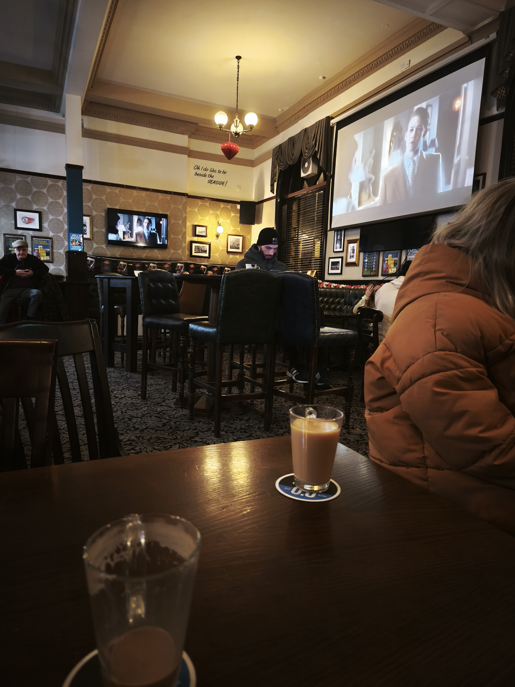

Community
The official response to the Waterloo Road fire was uneven and often slow. The community response was the opposite. This page records the neighbours, volunteers, organisers, and local businesses who stepped in when displaced residents needed warmth, information, practical help, and the reassurance that they had not been forgotten.
The First Safe Place
The community response began before anyone had time to organise it. When residents were evacuated in the early hours of February 7, they made their way to the nearest safe place they could find — The Last Resort pub on the corner. The staff didn't hesitate. They stayed up through the entire night, providing hot drinks, snacks, and somewhere warm to sit while the fire raged behind their homes. They kept watch on the houses from the pub and made sure no one was left outside in the cold.
It was the first act of many — and it set the tone for everything that followed.

Building a Lifeline
Faced with a lack of official coordination, Niki stepped in. On February 13 — one week after the fire — Niki created a WhatsApp group for Gordon Street residents. What started as a simple group chat became a lifeline for displaced households trying to coordinate with insurers, employers, schools, utility providers, and each other.
Niki publicly posted on the Rebuild Waterloo Facebook group:
"A few of us who are still displaced after the fire have set up a private WhatsApp Community for affected residents so we have a central place to share updates, contacts, advice and support since we have been excluded from official communication from the council and no access to mail." — Niki Cooke, Rebuild Waterloo Facebook group
Through the group, Niki drafted template emails for council tax relief and shared them with neighbours. Niki advised on contacting utility companies — recommending that anyone still paying for services they couldn't use should write to their providers. Niki followed up with Citizens Advice and chased council contacts on behalf of multiple households.
As the weeks went on, the group became more than a place for updates. It became a way to compare notes, flag problems, and stop people feeling like they were dealing with the aftermath in isolation. When formal communication was missing, residents built their own.
The group quickly became the only reliable source of updates for affected families — filling a gap that official channels had left empty.
The Neighbours of Gordon Street
While the official response was slow, the human response was immediate. The residents of Gordon Street looked after each other in ways that no council email could replicate.
One nearby couple — despite one of them recovering from an operation — kept watch over the evacuated houses from their bedroom window. They opened up their washing machine to any displaced neighbour without access to laundry. Another resident offered his tumble dryer. Together, they were the eyes and ears of the street while others couldn't be there.
"We don't want anything to happen to those houses. We want you all home." — A neighbour, Gordon Street
"We are watching the street and the houses for you." — Message to the residents' WhatsApp group
Older residents rallied too. One neighbour, who wasn't well enough for the WhatsApp group, was kept updated over cups of tea at the weekend. The same nearby couple offered weekly get-togethers for anyone who wanted to talk, share updates, or simply have a biscuit and a cup of tea in a familiar place.
One resident provided practical updates from street level — reporting on demolition progress, checking on properties, and keeping spirits up with characteristic dry humour.
One displaced family with young children faced one of the hardest situations — paying for everything themselves while the council provided minimal support. Yet even from temporary accommodation, they stayed connected through the group and attended the community meeting to push for answers.
These details matter. Community support was not abstract. It was someone offering a washing machine because yours was inaccessible. It was someone keeping watch on your front door when you were not allowed back. It was someone sending a quick message to say a fence had moved, demolition had started, or post had turned up. That kind of support doesn't make headlines, but it is what gets people through.
Rebuild Waterloo
The community response extended well beyond Gordon Street. The "Rebuild Waterloo" Facebook group became a hub for donations, fundraising, and mutual support. Coordinated by local volunteers and business owners, the group organised the distribution of clothing, food, bedding, toiletries, and household items.
The response was generous and practical:
- Local pubs, shops, and individuals organised fundraising events and collections
- Public donations included clothing, bedding, toiletries, food, household items, and children's essentials
- Local volunteers helped match offers of practical support to displaced families
The admins were careful to maintain transparency — publicly clarifying where funds came from and where they went, and distinguishing their efforts from other independent fundraisers.
Just as importantly, the group gave people somewhere to direct their goodwill. In the confusion of the first days, many people wanted to help but did not know how. Rebuild Waterloo turned that instinct into something organised, visible, and useful.
The Businesses We Lost
It wasn't just residents who were displaced. The fire destroyed or severely damaged several businesses that were woven into the fabric of South Shore — places people relied on every day.
The South Shore Pitstop Community Café was more than a café. Described by locals as a "safe haven," it served as a gathering point for vulnerable residents, offering affordable meals and a place to belong. Public reporting in late February said the café remained closed with months of disruption expected — leaving staff without work and regulars without their gathering place.
The Omoto Caribbean Shop and the Premier convenience store were also impacted — businesses that served the local community daily. For their owners and staff, the fire meant not just property damage but lost income, disrupted livelihoods, and an uncertain future.
Café Retro, while not directly damaged by the fire, has been affected by the displacement of its owner — a Gordon Street resident who is dealing with the financial strain of being unable to return home while also trying to keep a business running.
These weren't chain stores. They were independent, locally run businesses that people knew by name. Their loss is felt every day by the residents who depended on them.
Official Support
Alongside the grassroots effort, some official support was arranged:
- Chris Webb MP raised the incident with the government and linked it to regeneration plans for South Shore
- The DWP Mobile Support Team held walk-in sessions at the Enterprise Centre on Lytham Road for affected residents
- A community meeting on February 18 brought residents face-to-face with councillors for the first time
- The Director of Community and Environmental Services committed to a named site contact — though residents still lacked a formal coordinator or joint communication channel in the period that mattered most
That official support was welcome, but it arrived into a space the community had already filled. By the time meetings were being arranged, neighbours had already been checking on houses, sharing appliances, relaying updates, and helping each other navigate bills, insurers, schools, and alternative accommodation.
Community in the Long Recovery
The community role did not end when the immediate fire was over. As the situation shifted from emergency to recovery, the support changed shape too. Instead of hot drinks in the night, it became practical help with washing, transport, messages, paperwork, and keeping track of what was happening on the street.
For some households, the hardest stage came later: when access was technically restored but homes were still not properly livable. Broken windows, no washing facilities, disrupted services, smoke and soot concerns, insurance delays, and arguments over what counted as habitable created a slower, less visible crisis. Community support helped bridge that gap as well.
That included emotional support too. Cups of tea. Repeated reassurances. Dark humour when nothing else really fit. The simple act of someone else understanding exactly why a letter, a utility bill, or a delayed phone call could feel like the final straw on an already impossible week.
By March and April, the same resident network was still doing the small jobs that keep a street going: checking lights and windows, reporting rubbish, asking for street sweeping, sharing updates about post, passing on Building Control calls, and making sure nobody missed help that was available. A fundraiser at Layton Institute was offered to anyone still needing support. Residents also continued reporting debris, glass, wood, dust and fly-tipping around Gordon Street and the surrounding access routes.
This mattered because recovery had become less visible from outside. The flames were gone, the headlines had moved on, but the street was still dealing with blocked access, cleaning problems, damaged homes, uncertain repair timelines and the everyday exhaustion of chasing answers. Community support filled the silence with something practical.
Looking Forward
Despite everything, there are early signs of hope. Residents were told at a community meeting that the council may look at purchasing the cleared Smart Mart site. Both residents and councillors have discussed the possibility of a community green space — benches, flowers, a chatty bench, a place to gather together.
"If we get a lovely green space there, with benches and flowers, it will be so much nicer than the view we all had." — A neighbour, Gordon Street
One resident, characteristically pragmatic, noted they might actually have a view to look at for the first time. Another was already planning a street party for the summer — for when everyone is home.
The displaced residents of Gordon Street didn't wait for permission to help each other. When the system was slow, they filled the gap themselves. The WhatsApp group, the shared washing machine, the borrowed tumble dryer, the cups of tea over the weekend, the fundraising events across South Shore — these are the small, unglamorous acts that held a community together during weeks of uncertainty.
And they are part of the story just as much as the fire itself.